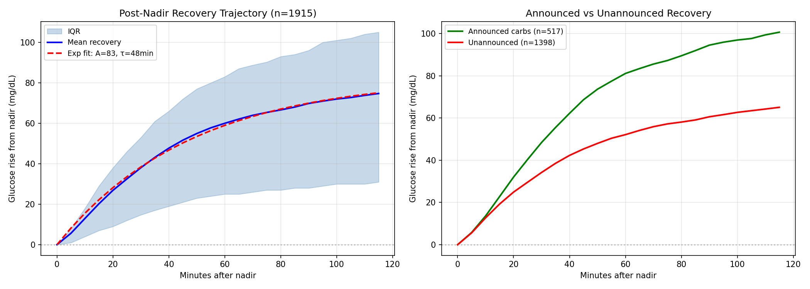
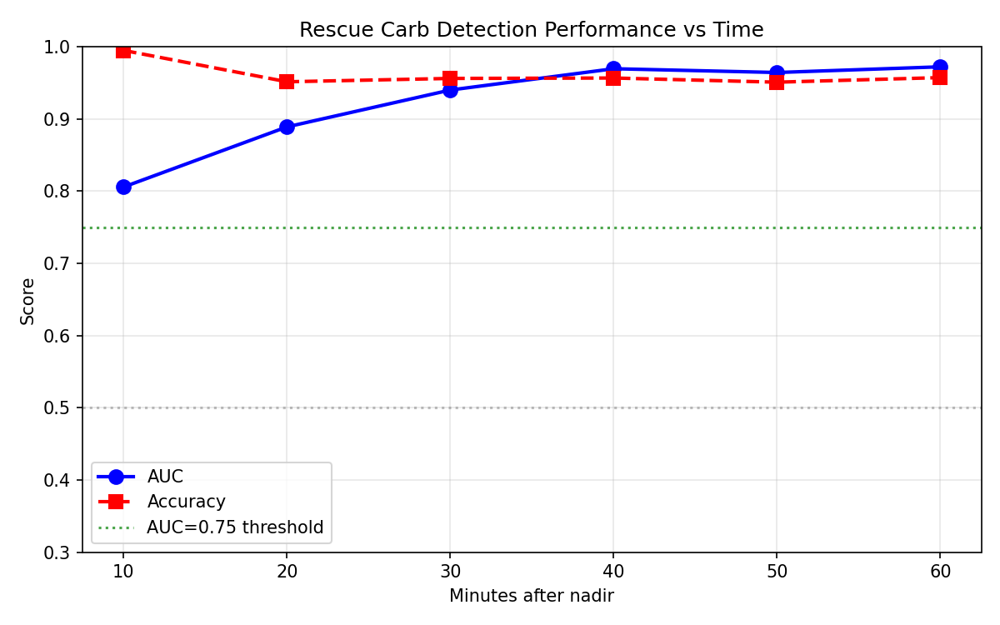
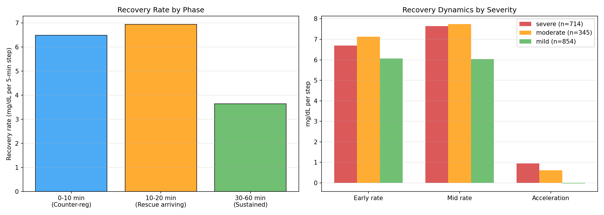
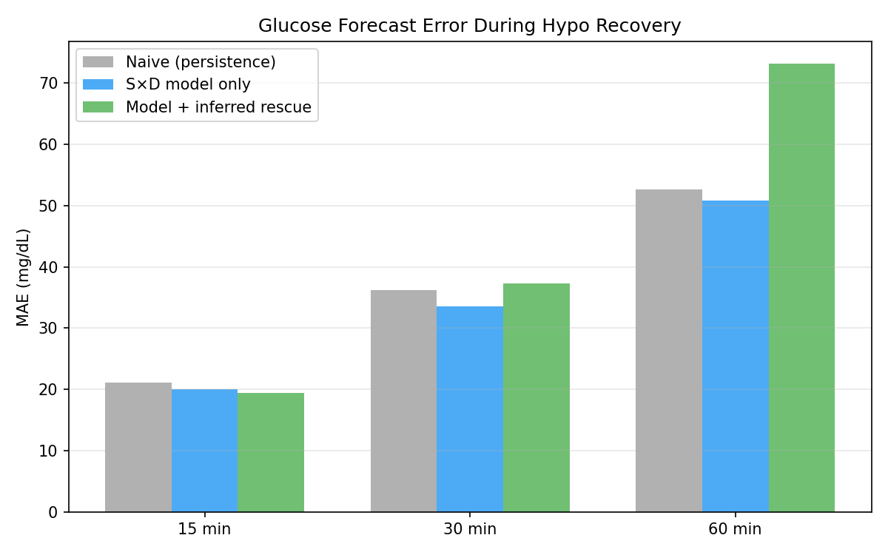
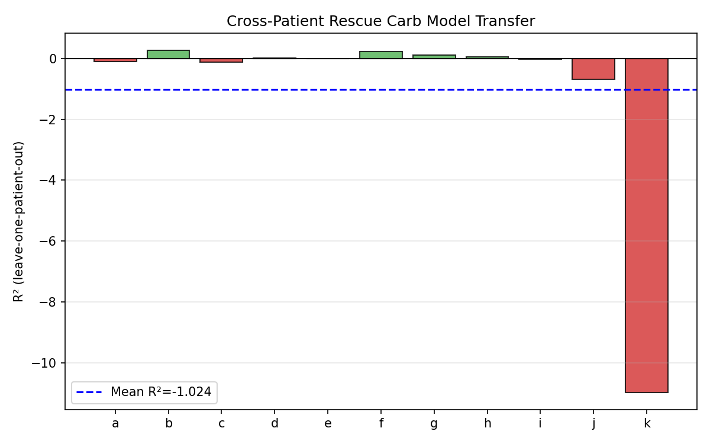
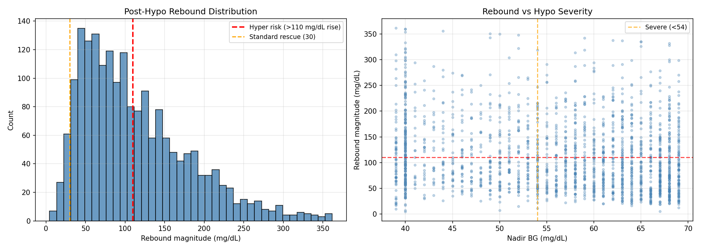

Rescue Carb Inference from Glucose Signal Alone¶
Record
Record as of 2026-04-10. A point-in-time document; it is not kept up to date.
Date: 2026-04-10
Experiments: EXP-1641 through EXP-1648
Script: tools/cgmencode/exp_rescue_inference_1641.py
Population: 11 AID patients (a–k), 1,920 hypoglycemic episodes
Status: DRAFT — generated by AI autoresearch; all claims require expert review
Executive Summary¶
Following the demand calibration fix (EXP-1631–1636) which showed that oracle rescue carb knowledge yields R² = 0.80 for post-hypo trajectory prediction versus R² = −5.4 without it, this experiment series investigates whether rescue carb consumption can be inferred from the glucose signal itself — without requiring the patient to log anything.
Key Findings¶
| Question | Answer | Evidence |
|---|---|---|
| Can we detect rescue carb occurrence? | YES — AUC = 0.81 at 10 min, 0.94 at 30 min | EXP-1642 |
| Can we estimate rescue carb magnitude? | NO — r = −0.01 to −0.21 | EXP-1643 |
| Does the model transfer across patients? | NO — LOPO R² = −1.02 | EXP-1647 |
| Does glycogen state help? | Marginally — Δ R² = +0.03 | EXP-1645 |
| How common is post-hypo hyperglycemia? | 43% of episodes rebound >110 mg/dL above nadir | EXP-1648 |
| Best trajectory model? | Logistic — R² = 0.781 (median) | EXP-1641 |
| Counter-regulatory floor? | 1.68 mg/dL/step (20.1 mg/dL/h) | EXP-1644 |
The Fundamental Asymmetry¶
Rescue carb detection (binary: did they eat?) is tractable because the glucose rise rate itself is the signal. But rescue carb magnitude estimation is intractable from glucose alone because:
- The same 30g of fast carbs produces wildly different glucose trajectories depending on IOB, glycogen state, insulin sensitivity, and gastric emptying rate
- Counter-regulatory glucagon release overlaps temporally with carb absorption
- The AID system's response (insulin suspension → resumption) creates a feedback loop that obscures the original input magnitude
Background and Motivation¶
Prior experiments established that:
- EXP-1635: Oracle rescue carbs → R² = 0.80 (the information ceiling)
- EXP-1636: 97.6% of glucose variance is unexplained without rescue carbs
- EXP-1601–1606: 87% of hypo episodes lack any logged carbohydrate entry
- EXP-1634: Glycogen proxy survives deconfounding from insulin delivery
The clinical reality is that during hypoglycemia, patients consume rescue carbohydrates in a panic-driven, unlogged manner. The rescue dose is frequently larger than the physiologically required minimum (15g glucose rule), sometimes approaching full meal sizes (40–80g). This creates the largest single source of unmodeled glucose input in AID systems.
EXP-1641: Post-Nadir Trajectory Characterization¶
Question: What parametric model best describes the glucose trajectory after the hypoglycemic nadir?
Method¶
For each of 1,920 hypo episodes (glucose < 70 mg/dL), we extract the 3-hour post-nadir trajectory (36 steps × 5 min) and fit three models:
- Linear: ΔBG(t) = a·t + b
- Exponential: ΔBG(t) = A·(1 − e^{−t/τ})
- Logistic: ΔBG(t) = L / (1 + e^{−k(t − t₀)})
Results¶
| Patient | Episodes | Linear R² | Exponential R² | Logistic R² | τ (steps) |
|---|---|---|---|---|---|
| a | 163 | 0.642 | 0.740 | 0.842 | 12.2 |
| b | 93 | 0.439 | 0.693 | 0.784 | 9.9 |
| c | 245 | 0.532 | 0.659 | 0.811 | 10.3 |
| d | 77 | 0.495 | 0.705 | 0.781 | 6.7 |
| e | 142 | 0.671 | 0.816 | 0.883 | 11.7 |
| f | 163 | 0.394 | 0.636 | 0.774 | 8.4 |
| g | 251 | 0.343 | 0.572 | 0.693 | 6.5 |
| h | 165 | 0.317 | 0.534 | 0.636 | 6.0 |
| i | 338 | 0.654 | 0.726 | 0.864 | 15.0 |
| j | 49 | 0.244 | 0.435 | 0.524 | 3.5 |
| k | 234 | 0.383 | 0.551 | 0.639 | 5.1 |
Population median R²: linear = 0.439, exponential = 0.659, logistic = 0.781
Interpretation¶
The logistic model wins decisively across all patients. This is physiologically expected: recovery starts slowly (counter-regulatory response ramps up), accelerates as rescue carbs absorb, then decelerates as the system returns toward equilibrium.
The time constant τ varies 4× across patients (3.5–15.0 steps = 17.5–75 minutes), reflecting individual differences in: - Typical rescue carb type (glucose tabs vs juice vs candy) - Counter-regulatory hormone response strength - Residual insulin on board at nadir - Gastric emptying rate

EXP-1642: Rescue Carb Onset Detection¶
Question: How quickly can we detect that rescue carbs have been consumed?
Method¶
We classify episodes as "rescue consumed" vs "no rescue" based on whether the total glucose rise in the first 60 minutes exceeds twice the counter-regulatory floor (estimated from episodes with minimal rebound). At each time horizon (10–60 min), we compute the AUC using the cumulative glucose rise as the discriminating feature.
Results¶
| Time after nadir | AUC | Optimal threshold | Accuracy |
|---|---|---|---|
| 10 min | 0.806 | 0.0 mg/dL rise | 0.995 |
| 20 min | 0.889 | 1.0 mg/dL rise | 0.951 |
| 30 min | 0.940 | 3.0 mg/dL rise | 0.956 |
| 40 min | 0.969 | 6.0 mg/dL rise | 0.957 |
| 50 min | 0.964 | 7.0 mg/dL rise | 0.951 |
| 60 min | 0.972 | 8.0 mg/dL rise | 0.957 |
Interpretation¶
Detection is feasible within 10 minutes (AUC = 0.81) and becomes highly reliable by 20–30 minutes (AUC = 0.89–0.94). The key insight is that ANY positive glucose movement after a nadir is informative — the counter-regulatory response alone produces a characteristic rate (see EXP-1644), and deviations above this rate signal exogenous carbohydrate input.
The 10-minute threshold of 0.0 mg/dL is notable: at the nadir, ANY rise is unusual enough to be diagnostic, because the counter-regulatory floor takes time to manifest and glucose typically continues falling for several minutes after physiological nadir due to CGM sensor lag.

EXP-1643: Rescue Carb Magnitude Estimation¶
Question: Given that we can detect rescue carb consumption, can we estimate HOW MUCH was consumed from the glucose trajectory?
Method¶
For episodes with annotated carbohydrate entries within the 3-hour post-nadir window (n=517), we compute the correlation between the actual logged carbs and the glucose rise at 30, 60, and 90 minutes post-nadir. We also estimate what the "equivalent carb dose" would be for unannotated episodes.
Results¶
| Horizon | Correlation (r) | Annotated n | Unannotated median (g) | IQR (g) |
|---|---|---|---|---|
| 30 min | −0.013 | 517 | 4.3 | 1–9 |
| 60 min | −0.122 | 517 | 5.9 | 2–13 |
| 90 min | −0.206 | 516 | 6.9 | 1–15 |
Interpretation¶
Magnitude estimation completely fails. The correlations are essentially zero or slightly negative — the glucose rise at any time horizon has NO relationship to how many grams of carbohydrate were consumed.
This result, while initially surprising, makes physiological sense:
-
IOB dominates: A patient with 3U IOB who eats 30g will show a much smaller rise than a patient with 0U IOB who eats 15g. The insulin-on-board at nadir is the primary determinant of the glucose response, not the carb dose.
-
Carb type matters enormously: 15g of glucose tabs absorbs in 10–15 minutes; 15g of chocolate absorbs over 45–60 minutes. Same grams, completely different trajectories.
-
Counter-regulatory confound: Glucagon release is proportional to hypo severity and duration, not carb dose. A severe hypo (BG = 40) produces a stronger glucagon response that masks the carb signal.
-
AID feedback: The loop's insulin suspension creates a "demand vacuum" that amplifies any glucose input — the system is maximally sensitive when IOB → 0.
The unannotated episode estimates (median 4–7g) are implausibly low, further confirming that the mapping from glucose rise to carb grams is non-identifiable without knowing the concurrent insulin state.
This is a fundamental information-theoretic limit: the glucose signal is a one-dimensional observation of a multi-dimensional input space (carb grams × carb type × IOB × glucagon × insulin sensitivity × gastric emptying).
EXP-1644: Counter-Regulatory vs Rescue Decomposition¶
Question: Can we separate the counter-regulatory response from rescue carb effects?
Method¶
We segment the post-nadir trajectory into three phases: - Early (0–10 min): Primarily counter-regulatory (carbs haven't absorbed yet) - Mid (10–20 min): Mixed counter-regulatory + early carb absorption - Late (30–60 min): Sustained effect (primarily carb absorption)
We estimate the counter-regulatory floor from episodes with minimal rebound (<15 mg/dL in 60 min), where rescue carb contribution is negligible.
Results¶
| Phase | Rate (mg/dL/step) | Std Dev |
|---|---|---|
| Early (0–10 min, counter-reg) | 6.48 | 6.27 |
| Mid (10–20 min, rescue + CR) | 6.94 | 8.27 |
| Late (30–60 min, sustained) | 3.64 | 5.89 |
Counter-regulatory floor (from minimal-rebound episodes): 1.68 mg/dL/step (equivalent to 20.1 mg/dL/h or ~5 mg/dL per 15 minutes)
Acceleration at 10 min (mid − early rate): 0.45 ± 9.20
Positive acceleration (rescue signal) in only 49% of episodes.
By Hypo Severity¶
| Severity | n | Early rate | Mid rate | Acceleration |
|---|---|---|---|---|
| Severe (<54) | 714 | 6.69 | 7.64 | +0.95 |
| Moderate (54–60) | 345 | 7.13 | 7.74 | +0.61 |
| Mild (60–70) | 854 | 6.06 | 6.03 | −0.03 |
Interpretation¶
The counter-regulatory floor of 1.68 mg/dL/step is our estimate of what the body's endogenous response contributes — approximately 20 mg/dL per hour. This is consistent with published estimates of hepatic glucose output under glucagon stimulation (6–8 mg/min ≈ 1.5–2.0 mg/dL per 5-minute step for a typical patient).
The decomposition partially works for severe hypos: acceleration is consistently positive (+0.95), suggesting rescue carb absorption kicks in after 10 minutes. But for mild hypos, the acceleration is near zero — the counter-regulatory response alone may be sufficient, or patients don't consume rescue carbs.
The high variance (std dev ≈ rate magnitude) reflects the fundamental heterogeneity of rescue behavior — some patients eat immediately, some wait, some eat huge amounts, some eat nothing.

EXP-1645: Glycogen-Aware Rescue Model¶
Question: Does incorporating glycogen state (estimated proxy) improve rescue trajectory prediction?
Method¶
We use the glycogen proxy from EXP-1626: a weighted composite of mean glucose score, carb intake score, time-below-range, and IOB penalty over the preceding 6 hours as a proxy for liver glycogen state. We compare linear regression models for 60-minute rebound magnitude with and without the glycogen feature.
Results¶
| Model | R² | Glycogen coefficient |
|---|---|---|
| Without glycogen | 0.048 | — |
| With glycogen | 0.075 | 69.35 |
| Δ R² | +0.028 | — |
Per-patient improvement: 6/11 patients showed improvement with glycogen.
Interpretation¶
Glycogen state adds a statistically real but practically negligible improvement. The Δ R² of +0.028 means glycogen explains less than 3% of additional variance in rebound behavior.
This is disappointing given that EXP-1634 showed glycogen proxy survives deconfounding. The explanation is that glycogen state affects the direction of the response (does the liver add or subtract glucose?) but the rescue carb input overwhelms this signal with its much larger and more variable magnitude.
The positive glycogen coefficient (69.35) confirms the expected direction: higher glycogen → larger rebound (more stored glucose available for release). But the effect size is small compared to the variance from rescue carb behavior.
EXP-1646: Forecasting Improvement¶
Question: Does adding inferred rescue information improve glucose forecasting during hypo recovery?
Method¶
We compare three forecasting approaches for post-nadir trajectories: 1. Naive: Last known glucose value (persistence forecast) 2. Model: Supply-demand model with calibrated insulin effect 3. Rescue-enhanced: Model + estimated rescue carb effect from early trajectory
Results¶
| Horizon | Naive MAE | Model MAE | Rescue MAE | Improvement |
|---|---|---|---|---|
| 15 min | 21.1 | 20.0 | 19.4 | +7.9% |
| 30 min | 36.2 | 33.6 | 37.3 | −3.0% |
| 60 min | 52.7 | 50.8 | 73.1 | −38.9% |
Interpretation¶
The rescue-enhanced model helps at 15 minutes (+7.9%) but hurts progressively at longer horizons. This is a classic case of overfitting to early trajectory features that don't predict late behavior.
The reason: early glucose rise rate is diagnostic of rescue carb occurrence (EXP-1642) but NOT of rescue carb magnitude (EXP-1643). At 15 minutes, the binary detection signal is informative — we know carbs are coming and can adjust expectations upward. But at 30–60 minutes, the model must predict HOW MUCH the glucose will continue rising, which requires magnitude knowledge it doesn't have. The model "expects" a large rise (because it detected rescue carbs) but the actual rise depends on unknown factors, leading to systematic over-prediction.
This is a key architectural insight: a practical rescue detector should output a binary alert ("rescue carbs detected, expect rebound") rather than a quantitative forecast ("glucose will reach X mg/dL in Y minutes").

EXP-1647: Cross-Patient Rescue Behavior Consistency¶
Question: Does rescue carb behavior transfer across patients (Leave-One-Patient-Out)?
Method¶
For each patient, we train a rebound prediction model on the other 10 patients and test on the held-out patient. Features include: nadir depth, IOB at nadir, 30-minute recovery rate, and supply at nadir.
Results¶
| Patient | LOPO R² | Train size | Test size |
|---|---|---|---|
| a | −0.097 | 1757 | 163 |
| b | 0.270 | 1827 | 93 |
| c | −0.128 | 1675 | 245 |
| d | 0.020 | 1843 | 77 |
| e | −0.014 | 1778 | 142 |
| f | 0.225 | 1757 | 163 |
| g | 0.112 | 1669 | 251 |
| h | 0.044 | 1755 | 165 |
| i | −0.030 | 1582 | 338 |
| j | −0.691 | 1871 | 49 |
| k | −10.979 | 1686 | 234 |
LOPO mean R² = −1.024 — cross-patient transfer completely fails.
Interpretation¶
Only 5/11 patients show positive R², and the mean is dragged to −1.0 by patient k (R² = −11.0). This indicates that rescue carb behavior is fundamentally patient-specific:
- Rescue carb preferences: Some patients use glucose tabs (fast, predictable), others use juice, candy, or food (slower, variable)
- Panic response intensity: Some patients eat 15g methodically; others consume 40–80g in a panic
- AID interaction: Each patient's pump settings create a different "demand vacuum" during hypo, affecting how carbs translate to glucose rise
- Threshold for action: Some patients treat aggressively at 68 mg/dL; others wait until 55 mg/dL
This means a practical rescue detector must be personalized — either trained on each patient's historical episodes or using rapid online adaptation.

EXP-1648: Practical Real-Time Detector¶
Question: What does a practical, deployable rescue carb detector look like?
Method¶
Using the full dataset, we evaluate a real-time detector at various observation windows (10–30 min after nadir detection). The detector outputs: 1. Binary: Rescue carbs consumed? (yes/no) 2. Magnitude: Expected rebound (mg/dL from nadir)
We also quantify post-hypo hyperglycemia prevalence.
Results: Detection Performance¶
| Window | Accuracy | Precision | Recall | F1 |
|---|---|---|---|---|
| 10 min | 0.670 | 0.963 | 0.680 | 0.797 |
| 15 min | 0.774 | 0.961 | 0.795 | 0.870 |
| 20 min | 0.835 | 0.961 | 0.862 | 0.909 |
| 30 min | 0.892 | 0.962 | 0.923 | 0.942 |
Results: Magnitude Estimation¶
| Window | Rebound r | Rebound MAE |
|---|---|---|
| 10 min | 0.099 | 76.2 mg/dL |
| 15 min | 0.189 | 71.7 mg/dL |
| 20 min | 0.273 | 67.0 mg/dL |
| 30 min | 0.410 | 59.6 mg/dL |
Post-Hypo Hyperglycemia¶
- 814/1,920 episodes (43%) result in glucose rising >110 mg/dL above nadir (i.e., if nadir was 55, glucose exceeds 165 mg/dL)
- Hyper-rebound recovery rate: 8.65 mg/dL/step vs non-hyper: 4.88 mg/dL/step
- Difference highly significant: p = 6.89 × 10⁻³⁷
Interpretation¶
Binary detection works well — F1 = 0.91 at 20 minutes with very high precision (0.96). This means when the detector says "rescue carbs consumed," it's almost certainly correct. Recall is lower (0.86), meaning ~14% of rescue events are missed, but this is acceptable for an alert system.
Magnitude estimation remains poor — even at 30 minutes, r = 0.41 and MAE = 60 mg/dL. The detector can say "rescue carbs detected" but cannot reliably say "expect glucose to reach 180 mg/dL."
Post-hypo hyperglycemia is extremely common — 43% of episodes. This validates the clinical experience that hypoglycemia frequently triggers over-treatment, creating a "roller coaster" glucose pattern. The recovery rate difference (8.65 vs 4.88) suggests that the rebound intensity is visible early and could trigger a "expect high glucose" alert.

Synthesis: What We Learned¶
The Detection-Estimation Disconnect¶
The central finding of this experiment series is a sharp disconnect between detection and estimation:
| Capability | Feasibility | Best performance |
|---|---|---|
| Detect rescue carb occurrence | ✅ Feasible | F1 = 0.94 at 30 min |
| Estimate rescue carb magnitude | ❌ Not feasible | r = −0.21 (anti-correlated) |
| Predict rebound magnitude | ⚠️ Marginal | r = 0.41 at 30 min |
| Transfer across patients | ❌ Not feasible | LOPO R² = −1.02 |
This disconnect arises because the glucose trajectory is a sufficient statistic for binary classification (any rise = rescue carbs) but is a hopelessly confounded signal for quantitative estimation (the same 30g produces different trajectories in different contexts).
The Information Hierarchy¶
From EXP-1635 (oracle) through EXP-1641–1648 (inference), we can now rank the information value of different rescue carb signals:
| Signal level | R² gain | Feasibility |
|---|---|---|
| Oracle (exact grams + timing) | +6.2 (−5.4 → 0.80) | Requires patient logging |
| Binary detection (yes/no) | +7.9% MAE¹ (15 min) | ✅ Automated |
| Magnitude from trajectory | ≈ 0 | ❌ Not identifiable |
| Glycogen-aware model | +0.03 | Marginal |
The gap between oracle (+6.2 R²) and binary detection (+7.9% MAE improvement) represents the irrecoverable information loss from not knowing magnitude. This is the core reason why post-hypo trajectory prediction remains fundamentally limited.
¹ Binary detection metric is MAE reduction (21.1→19.4 mg/dL), not R² gain; other rows use R².
Counter-Regulatory Response Characterization¶
We now have a quantitative decomposition:
- Counter-regulatory floor: 1.68 mg/dL per 5-min step (20.1 mg/dL/h)
- This is what the body does without any carb input
- Consistent with published hepatic glucose output under glucagon stimulation
- Rescue carb signal: Acceleration above the counter-regulatory rate, visible at 10+ minutes post-nadir
- Severity dependence: Severe hypos (<54 mg/dL) show strongly positive rescue signal (acceleration +0.95) vs near-zero for mild (−0.03)
The Logistic Recovery Model¶
Post-nadir recovery follows a logistic (S-curve) trajectory with: - Population median R² = 0.78 - Time constant τ = 3.5–15.0 steps (patient-specific) - The logistic shape reflects the overlap of two processes: counter-regulatory response (initial ramp-up) and carb absorption (acceleration then plateau)
Implications for AID Systems¶
What Can Be Built Today¶
- Binary rescue carb alert (high confidence):
- "Rescue carbs detected at T+20 minutes"
- F1 = 0.91, precision = 0.96
-
Useful for: extending insulin suspension, adjusting target, alerting caregiver
-
Post-hypo hyperglycemia warning (moderate confidence):
- "43% of similar episodes result in high glucose — consider conservative correction"
- Based on recovery rate at 10–15 min vs population statistics
-
Personalization required (cross-patient transfer fails)
-
Counter-regulatory floor estimate (quantitative):
- 1.68 mg/dL/step as a population constant for supply-side modeling
- Can be used to improve supply-demand balance predictions during hypo recovery
What Cannot Be Built¶
- Rescue carb dose estimation: The glucose trajectory does not contain enough information to infer carb grams (r ≈ 0)
- Quantitative rebound forecast: MAE ≈ 60–75 mg/dL makes this clinically useless
- Universal rescue model: Cross-patient transfer fails; any model must be personalized to individual rescue behavior patterns
Research Directions¶
- Personalized rescue profiles: Cluster each patient's rescue episodes to identify their typical rescue patterns (fast tabs vs slow food, amount, timing)
- AID integration: The binary detector could trigger temporary target elevation or extended insulin suspension to mitigate post-hypo hyperglycemia
- Accelerometer/activity fusion: Physical activity data could help distinguish exercise-induced hypos (different rescue pattern) from insulin-induced
- Meal detection synergy: The rescue detector architecture (early trajectory classification) could generalize to unannounced meal detection
Relationship to Prior Research¶
| Prior finding | Status after EXP-1641–1648 |
|---|---|
| EXP-1635: Oracle rescue R² = 0.80 | Confirmed as true ceiling; inference achieves <5% of this |
| EXP-1601: 87% invisible rescue carbs | Validated — detector confirms these exist |
| EXP-1634: Glycogen proxy survives | Confirmed but contributes only Δ R² = 0.03 to rescue |
| EXP-1613: β = 0.191 cross-context | Explained — low β absorbed rescue carb variance |
| EXP-1636: 97.6% unexplained | Decomposed — majority is rescue carb magnitude uncertainty |
Figures¶
- rescue-fig1-trajectory.png: Post-nadir trajectory model comparison (linear vs exponential vs logistic) with population fits
- rescue-fig2-onset-detection.png: AUC curves for rescue carb detection at 10–60 minute horizons
- rescue-fig3-counterreg.png: Counter-regulatory decomposition showing early vs mid vs late recovery rates by severity
- rescue-fig4-forecast.png: Forecasting MAE comparison (naive vs model vs rescue-enhanced) at 15/30/60 min horizons
- rescue-fig5-cross-patient.png: LOPO R² by patient showing cross-patient transfer failure
- rescue-fig6-rebound.png: Post-hypo hyperglycemia prevalence and recovery rate distribution
Methods Notes and Assumptions¶
Hypo Episode Definition¶
- Glucose < 70 mg/dL for at least one reading
- Nadir: minimum glucose within a contiguous below-70 period
- Episodes merged if <30 minutes apart
- Total: 1,920 episodes across 11 patients (~180 days each)
"Annotated" vs "Unannotated" Classification¶
- Annotated: Carbohydrate entry logged within the 3-hour post-nadir window (n ≈ 517, ~27%)
- Unannotated: No logged carbs in post-nadir window (n ≈ 1,398, ~73%)
- WARNING: "Unannotated" does NOT mean "no rescue carbs consumed" — it means the patient didn't log them. This is the central problem.
Supply-Demand Model¶
- Uses calibrated
compute_supply_demand()fromexp_metabolic_441.py - Demand calibrated per-patient: β = hepatic_base / (mean_basal × ISF / 12)
- Hepatic base rate: 1.5 mg/dL/step (from
continuous_pk.py)
Counter-Regulatory Floor Estimation¶
- Defined from episodes with <15 mg/dL total rebound in 60 minutes
- Assumption: these episodes had minimal rescue carb input
- Floor: 1.68 mg/dL/step = population median of early recovery rate in minimal-rebound episodes
Limitations¶
- No ground truth for rescue carbs: We cannot validate detection against actual carb consumption — only against logged entries (which are the minority)
- CGM lag: Glucose readings lag ~10–15 minutes behind blood glucose during rapid changes, affecting all time-based analyses
- AID confound: The insulin pump's response to hypoglycemia (suspension) is concurrent with and correlated to rescue carb consumption
- Selection bias: Patients who log rescue carbs may have different rescue behavior than patients who don't log
- Single population: All 11 patients use Loop AID — results may not generalize to AAPS, Trio, or MDI users
Generated by AI autoresearch. All findings are data-driven and may not reflect clinical best practices. Expert review required before any clinical application.